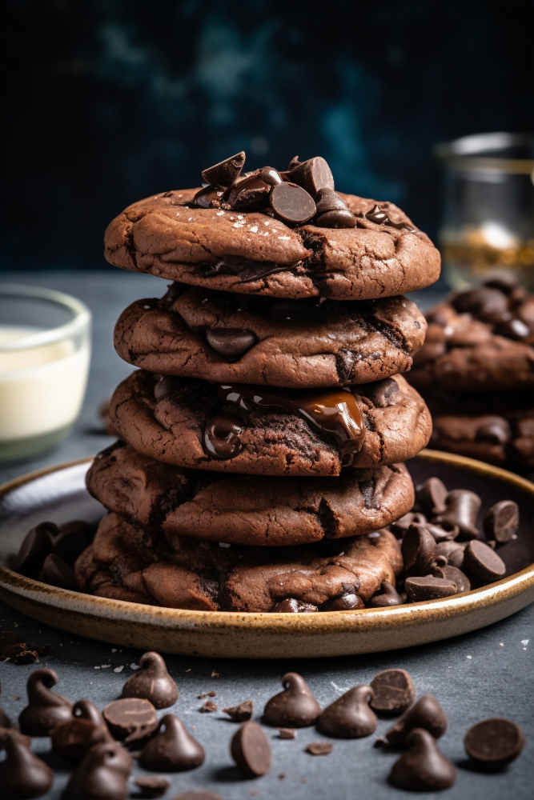

Double Chocolate Chip Cookies

These chewy chocolate chip cookies are made with
cocoa powder and chocolate chips to guarantee chocolaty flavor in every bite. Your kids will love them!
Ingredients
- 1 and 1/2 cups of white sugar
- 2 sticks of softened butter
- 2 eggs
- vanilla extract
- all purpose flour
- cocoa powder
- baking soda
- salt
- 2 cups of semi-sweet chocolate chips
- wallnuts these are optional but will add a great crunch to your finished cookies
How to Prepare
- Gather all ingredients. Preheat the oven to 350 degrees F. or 175 degrees C.
- Beat sugar, butter, eggs, and vanilla in a large bowl until light and fluffy.
- Combine flour, cocoa powder, baking soda, and salt in another bowl;
stir into butter mixture until well blended.
- Stir chocolate chips and walnuts into dough until evenly distributed.
Drop rounded tablespoonfuls of dough 2 inches apart onto ungreased baking sheets.
- Bake in the preheated oven just until set, 8 to 10 minutes.
Cool slightly on the cookie sheets before transferring to wire racks to cool completely.
- Serve and enjoy!